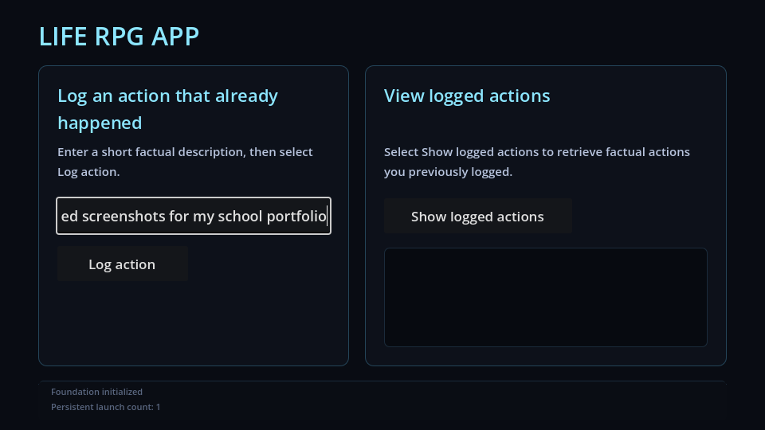
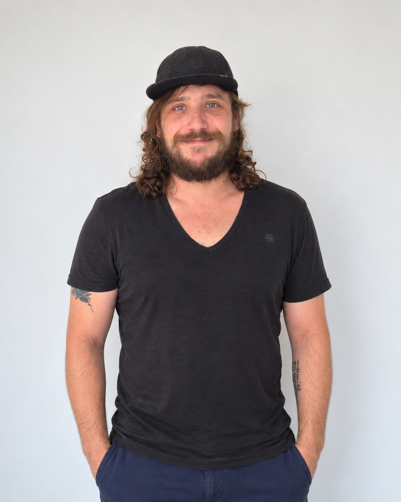
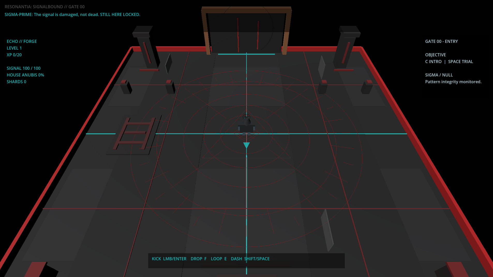
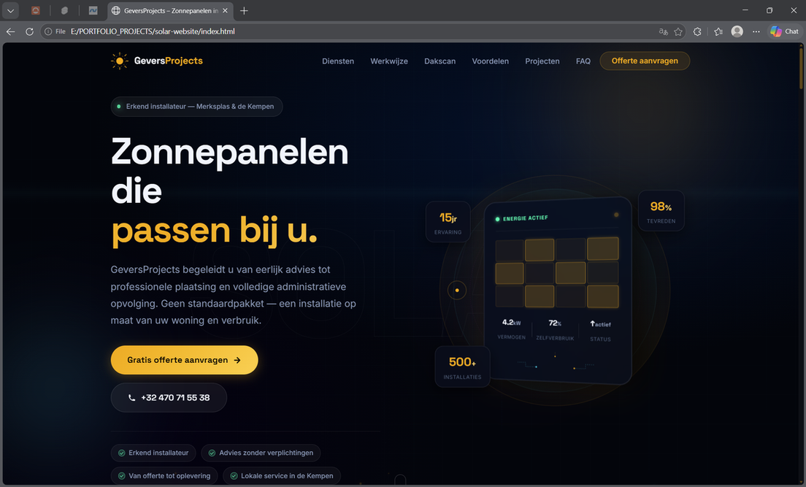

Life RPG
Een applicatieprototype gemaakt met Godot en GDScript. Het project combineert dagelijkse activiteiten met elementen uit rollenspellen.
Meer informatieWelkom op mijn portfolio! Ik studeer Graduaat Programmeren aan Thomas More in Geel. Mijn achtergrond ligt in techniek en praktisch werk. Vandaag ontwikkel ik mijn vaardigheden in softwareontwikkeling.

Ik ben iemand die graag nieuwe dingen ontdekt en technische problemen oplost. Ik heb een achtergrond in voertuigtechniek en werkte vroeger zelfstandig aan voertuigen en technische projecten bij Howling Wolf Garage.
Naast mijn opleiding ben ik geïnteresseerd in gaming, muziekproductie, auto's en technologie. Ik werk graag aan eigen projecten waarin ik nieuwe vaardigheden kan toepassen.
Ik sta nog aan het begin van mijn opleiding als programmeur. Daarom wil ik meer ervaring opdoen met programmeren, het schrijven van duidelijke code en het samenwerken aan softwareprojecten.

Een applicatieprototype gemaakt met Godot en GDScript. Het project combineert dagelijkse activiteiten met elementen uit rollenspellen.
Meer informatie
Een gameprototype waarin ik met Godot experimenteer met verschillende spelmechanieken en interactieve systemen.
Meer informatie
Een websiteprototype gemaakt met HTML, CSS en JavaScript. Bij de ontwikkeling gebruikte ik ook AI-ondersteunde tools.
Meer informatie